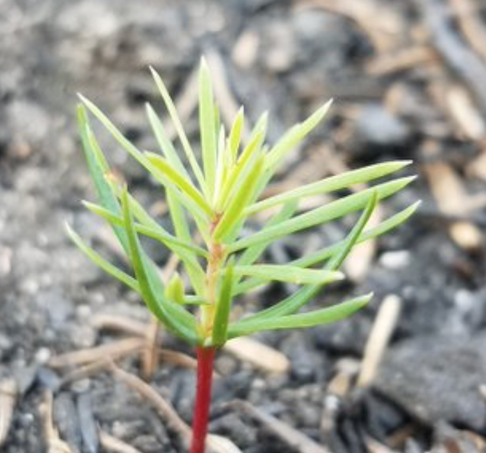
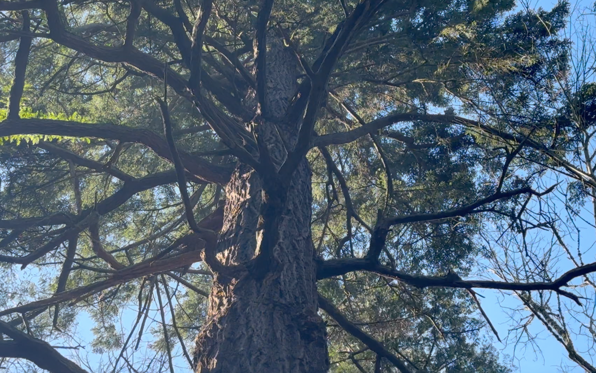
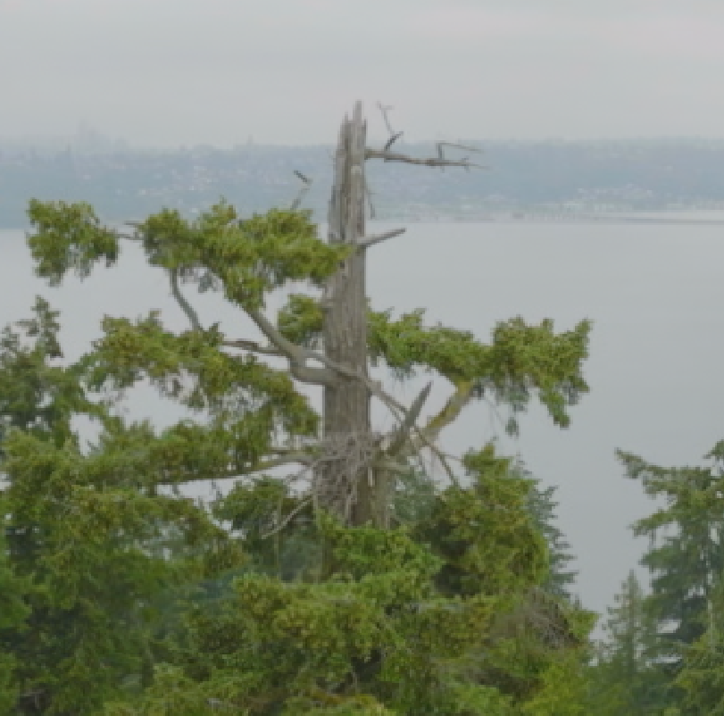

<div id="titleDiv" class="basicDiv">
  <div style="background-color: ivory;
              font-family: georgia;
              font-size: 32px;
              h88eight: 1000px;"> 
<h3>Seattle's Biggest &amp; Oldest Creature</h3>

<div style="inline-block">
  
  
  

</div>


<ul>
 <li> Starts out as a seedling after destructive fire.
 <li> Grows tall in the sunlight.
 <li> Often loses its crown during big storms.
 <li> After 200 years, its thick bark protects it from most fires.
 <li> Can live for 1000 years.
</ul>


</div>
</div>
